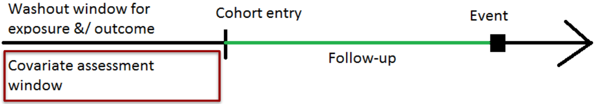

4 Step 1: Proxy sources
4.1 Identify the data dimensions (proxy sources)
In this example we only have prescription domain (1 domain dx of ICD-10-CM code). Hence \(p = 1\) in this exercise.
NHANES Questionnaire collects information on: (a) dietary supplements, (b) nonprescription antacids, (c) prescription medications, and (d) preventive aspirin use.
4.2 Define a covariate assessment period (CAP)

We only collect proxy information from a well-defined CAP. In our case, it was \(30\) days.
NHANES asked “In the past 30 days, have you used or taken medication for which a prescription is needed? Do not include prescription vitamins or minerals you may have already told me about.”
4.3 Merge all proxy sources into one data
We merge proxy data (ICD-10 codes) from 3 cycles.
4.4 Omit duplicated information
We need to delete codes that could be close proxies of exposure and/or outcome, or other investigator specified covariates we have already selected in step0.
4.5 Long format proxy data
Here is an example of 3 digit codes for 1 patient with subject ID “100001”. We create the same for all patients.
| ID | ICD 10 codes (3 digit) | Description |
|---|---|---|
| 100001 | F33 | Major depressive disorder, recurrent |
| 100001 | I10 | Hypertension |
| 100001 | M62 | Muscle spasm |
| 100001 | F32 | Major depressive disorder, single episode |
| 100001 | M25 | Joint disorder/pain |
| 100001 | K21 | Gastro-esophageal reflux disease |
| 100001 | M79 | musculoskeletal pain conditions |
| 100001 | R12 | Heartburn |